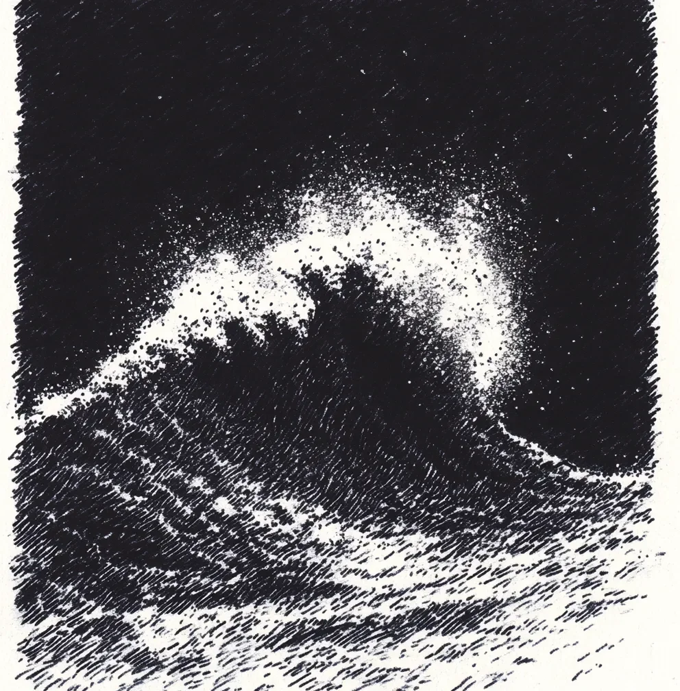

스무 해의 삶보다도 그 파도가 내게 용기에 대해 더 많은 것을 가르쳐주었다. 파도는 절대적인 어둠을 가르며 부서진 빛으로 폭발하는 물마루와 함께, 자연의 도전이 눈에 보이는 형태로 내 앞에 솟아올랐다. 그 순간, 하늘로 치솟는 물보라가 마치 별들의 반란처럼 터져 나가는 것을 보며, 나는 고대 문명들이 왜 바다에서 신들을 보았는지 이해하게 되었다.
[The wave taught me more about courage than twenty years of living ever did. It rose before me like nature’s defiance made visible, its crest exploding into shattered light against the absolute dark. In that moment, watching spray blast skyward like a rebellion of stars, I understood why ancient cultures saw gods in the sea.]
내 서핑보드는 가능성으로 가득 차 내 손바닥 아래서 떨리고 있었다. 6개월간의 재활이 나를 이곳, 아직 어둠이 세상을 지배하고 있는 이곳으로 데려왔다. 매일 나는 부서진 다리가 고통으로 비명을 지르는 동안 다른 이들이 파도를 타는 것을 지켜보았다. 하지만 오늘, 뭔가가 달라졌다. 오늘, 바다가 나를 부르고 있었다.
[My surfboard trembled beneath my palm, alive with possibility. Six months of rehabilitation had brought me here, where darkness still claimed the world. Each day, I’d watched others ride while my shattered leg screamed its protests. But today, something shifted. Today, the ocean beckoned.]
파도는 마치 예술가의 분노처럼 스스로를 만들어갔고, 매 움직임이 그 힘을 더해갔다. 하얀 물보라가 어둠 속에 무늬를 새겼고, 그것은 마치 흉터처럼 또렷하고 치유처럼 도전적인 선들을 만들어냈다. 내 심장은 파도의 쇄도와 함께 울렸고, 사고 이후 처음으로 두려움이 연료가 되었다.
[The wave built itself like an artist’s fury, each stroke adding to its power. White spray carved patterns against the darkness, creating lines as deliberate as scars, as defiant as healing. My heart thundered in time with the surge, and for the first time since the accident, fear became fuel.]
나는 힘차게 패들링을 했다. 물의 끌어당김이 어깨를 통해, 티타늄 핀을 통해, 그리고 내가 다시는 서핑을 못할 거라고 했던 그들의 말 이후로 안고 있던 모든 의심을 통해 전해져 왔다. 파도가 나를 붙잡았고, 들어올렸다. 내 몸은 자신의 힘을 기억해냈다—부서졌던 부분과 치유된 부분이 하나가 되어 움직였다.
[I paddled hard, feeling the pull of the water through my shoulders, through the titanium pins, through every doubt I’d carried since they’d said I’d never surf again. The wave caught me, lifted me. My body remembered its strength—both the broken and the healed parts moving as one.]
내 발 아래에서 세상이 변모했다. 나는 힘과 순응 사이에서 균형을 잡으며 솟아오르고 있었다. 파도의 에너지가 전류처럼 나를 관통했고, 매 순간이 하나의 확신이 되었다. 이건 누군가의 틀림을 증명하는 것이 아니었다. 이건 어둠으로부터 나의 진실을 되찾는 것이었다.
[The world transformed beneath my feet. I was rising, balanced between power and surrender. The wave’s energy surged through me like electricity, each moment an affirmation. This wasn’t about proving anyone wrong. This was about reclaiming my truth from the darkness.]
나는 공허를 가로질러 달렸고, 내 모습은 마치 검은 캔버스 위의 하얀 선들을 그리는 예술가처럼 공간을 가르며 나아갔다. 내 아래에서, 파도의 표면은 힘과 우아함에 대한 자신만의 이야기를 들려주고 있었다. 어떤 이들은 네가 스스로를 다시 만들 수 없다고 하지만, 그들은 틀렸다.
[I rode through the void, my form cutting through space like the artist’s white lines against black canvas. Below me, the wave’s face told its own story of power and grace. Some say you can’t rebuild yourself, but they’re wrong.]